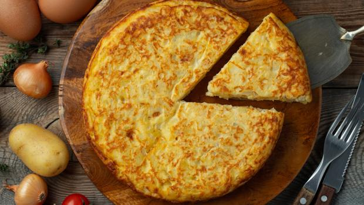

Tortilla Española

Description
The Spanish omelette or tortilla is an omelette or omelet to which chopped potatoes are added.
It is one of the most well-known and emblematic dishes of Spanish cuisine, being a very popular
product that can be found in almost any bar or restaurant in the country.
Ingredients
- 6 eggs
- 3 potatoes (600 gr)
- 1 small onion
- 1 green pepper
- 2 glasses of oliva oil
- salt
- 1 leaf of parsley
Steps
- Peel and chop the onion into medium dice. Clean the green pepper, remove the stem and the seeds and cut it into cubes.
- If the potatoes are dirty, pass them through water. Peel them, cut them in half lengthwise, then cut each piece into thin 1/2-inch half moons.
- Put everything in the pan, season to your liking and fry over low heat for 25-30 minutes.
- Remove the fry and drain it. Pass the oil to a container and reserve it. Clean the pan with absorbent kitchen paper.
- Crack the eggs, place them in a large bowl, and beat. Salt them to your liking, add the fried potatoes, onion and pepper and mix well.
- Place the pan back on the heat, add a drizzle of the reserved oil, and add the mixture. Stir a little with a wooden spoon and wait (20 seconds) for it to start to curdle.
- Separate the edges, cover the pan with a plate that is larger in diameter than the pan, and flip it over.
- Throw it again so that it curdles on the other side.
Back